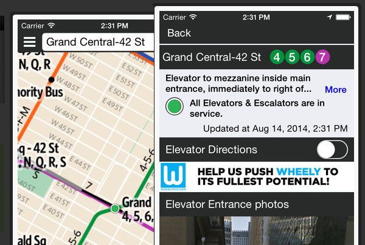

AXS MAP - AXS MAP is a website that allows users to find accessible places such as restaurants, stores, etc. It then allows users to rate the accessibility of the places they visit by a five star system. Users can share locations with their friends online and with social media. AXS MAP has a basic interface with a map that has search capabilities. It uses icons that are easily understood and offers a basic rating system for accessibility categories. The overall experience is not very good however. The website relies heavily on user input, and as of now, there is little to no information on any locations. Also, there are a lot malfunctioning features, such as the star system which shows up at an alarming size which blocks other elements and does not work. AXS MAP has a good idea with poor execution and because it relies on user input, there is not enough information.
WheelyNYC - Wheely is an accessible navigation guide that helps wheelchair users better navigate the New York City subway system. Wheely uses live open source data for real time subway schedules. It also provides GPS directions for user orientation. Wheely shows users all accessibility locations for New York subways in an easy to understand interface. Users can see photos and information of all accessible subway stations. Wheely is an app in which I gained the most inspiration from. Unlike AXS MAP, Wheely provides the accessibility information instead of relying on user input. The map interface mirrors any other map applications, like google maps, but is stripped down even further to only show relevant accessibility information. Unfortunately, although Wheely is a great app that is designed with great functionality, Wheely seems to be currently defunct.